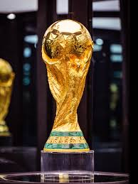

World Cup Winners by Country
An interactive map showing which nations have lifted the World Cup trophy.

The greatest sporting event on the planet — every four years, the world stops to watch.
The FIFA World Cup was first held in 1930 in Uruguay, who also won the inaugural tournament. Organized by FIFA (Fédération Internationale de Football Association), the competition brings together national teams from across the globe to compete for the most coveted trophy in sport.
The tournament was not held in 1942 or 1946 due to World War II. Since then, it has been held every four years without interruption. Brazil is the most successful nation in World Cup history, having won the tournament five times. The 2022 World Cup in Qatar was the first ever held in the Middle East, with Argentina defeating France in a dramatic final decided by penalty shootout.
The 2026 World Cup will be hosted jointly by the United States, Canada, and Mexico — and will be the first ever to feature 48 teams.
The FIFA World Cup trophy — one of the most recognized symbols in all of sport.

The greatest goal scorers in World Cup history:
Relive some of the most iconic goals ever scored on the world's biggest stage.
An interactive map showing which nations have lifted the World Cup trophy.